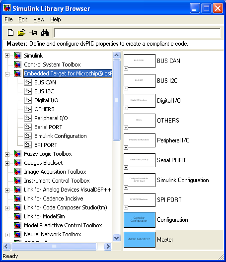
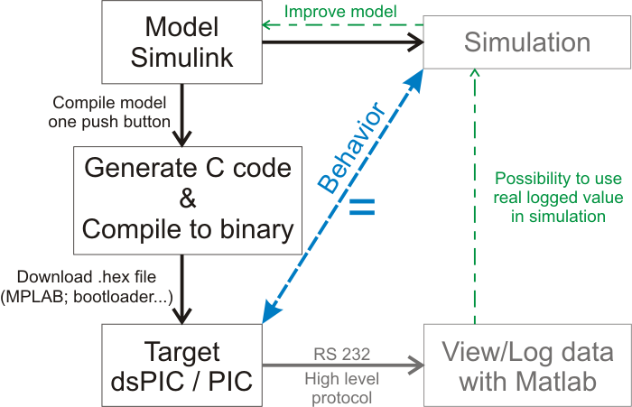

Embedded Target for PIC / dsPIC is a blockset for Matlab® that
works on the top of the MathWorks Simulink®.
|
Pages related to Embedded Target for PIC/dsPIC |
The blockset can Generates C code for the microcontroller in one click from a simulink model. The C code is automatically compiled
into a binary file ( .hex and .cof file) ready to be downloaded into the targeted microcontroller. The soft downloaded do exactly the same calculation that are done while simulating the model.
This fast prototyping tool for 16 bits PIC MCU
- generates and compiles C code from a simulink model and/or a Stateflow flow chart
- makes the development fast, bugfree and easily updated
- makes the implementation of complex calculation easy
- allows to optimize the fix point calculation using the matlab fixed point tools
- allows to monitor and to log data in real time with matlab
- allows to import your written C functions into the schematic
- compile the C files generated with the gcc compiler for dsPIC from Microchip
The blockset allo to lets you concentrating on the mathematical part and the logic functions of the simulink model. You can simulate the calculation that will be implemented into the microcontroller. You do not need to know much about PIC/dsPIC programming. The blockset support most peripheral present on the microcontroller and configure the selected peripheral. The main function configure and use adequately timer to respect the desired time-step defined for the simulink diagram. The dsPIC/PIC24 blocks have no effect on a simulink simulation.

The blocks added to the simulink® library allow to connect most of the PIC24, dsPIC30 and dsPIC33 peripherals (PWM, ADC,
IC, OC, SPI, I2C, CAN, UART ...) to any other Simulink blocks
C code generated for theses peripheral is merged to the C code generated by the Real Time Embedded Coder® toolbox.
Debugging and monitoring values is made very easy through one simulink block and one graphical interface associated :
- The block "Interface Tx-matlab" implement a high level protocol using one UART port of the microcontroller. This block allows
to send data from the
microcontroller to the PC host in real time.
- A matlab graphical user interface can receive theses data through the Serial port of the PC/mac (can be a USB emulated serial port) and plot them in real time.
It makes real time Monitoring; and debugging easy.
It also allows to log data into the matlab workspace.
The logged data can be used to feed a simulink model for simulation. Thus, real microcontroller input data recorded (from ADC, IC...) are used for the simulink simulation or .m script file allowing to test or improve the simulink model using real data logged in real condition. Once you have tune the math part of your model, you can then reprogramme the microcontroller with the new improved model. The simulation result will be very close to the real model running in the microcontroller since input data comes from the same peripheral and the microcontroller's running model is equivalent to the PC simulation model.
 |
Capabilities of the blockset.
|
Possible target are most of the dsPIC30f, dsPIC33 and, PIC24H. ( see detail on the download page)
The blockset for simulink works
with the GCC compiler from Microchip®. MPLAB is not required but can be used for the programming the microcontroller (import the .hex file and programme the target).
Many Mathworks toolbox like "Stateflow®" and "Stateflow coder®" or "fixed point blockset" can be used with the blockset "Embedded Target for dsPIC".
See examples for more details on the capabilities of the blockset. |